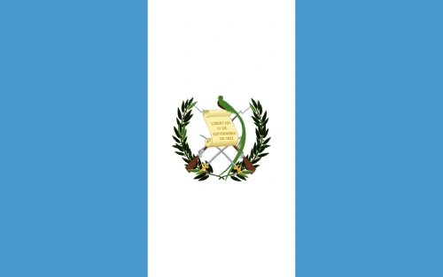

Francisco De Leon Fernandez
About Me
My name is Francisco and I am from Guatemala. I enjoy learning new technologies and improving my programming skills every day. I am currently studying software development, with a focus on Python, C#, and .NET. I like solving problems, building projects, and challenging myself with new ideas. In my free time, I enjoy spending time with my family, learning English, and working toward my goal of becoming a professional software developer.
Guatemala, Guatemala

Guatemala is a beautiful country located in Central America. It is known for its rich culture, colorful traditions, and ancient Mayan history. The country is home to volcanoes, lakes, mountains, and tropical forests, making it one of the most diverse places in the region. Guatemala is also famous for its coffee, delicious food, and the kindness of its people.
Web Dev Resources
- Learn HTML, CSS, and JavaScript
- Build responsive websites
- Understand web development frameworks
- Work with databases and APIs
- Develop full-stack applications